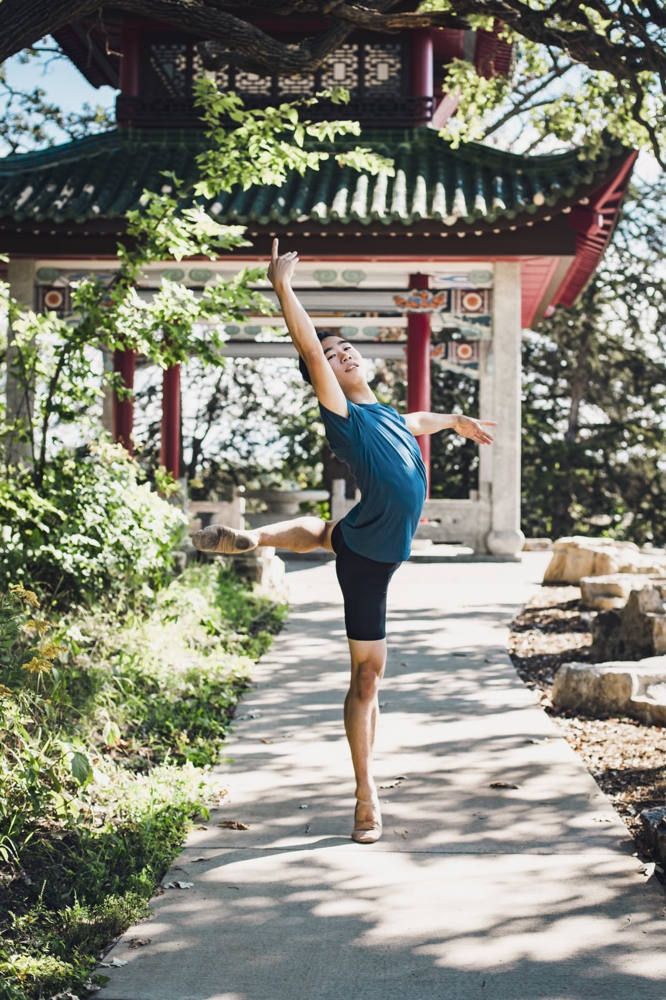
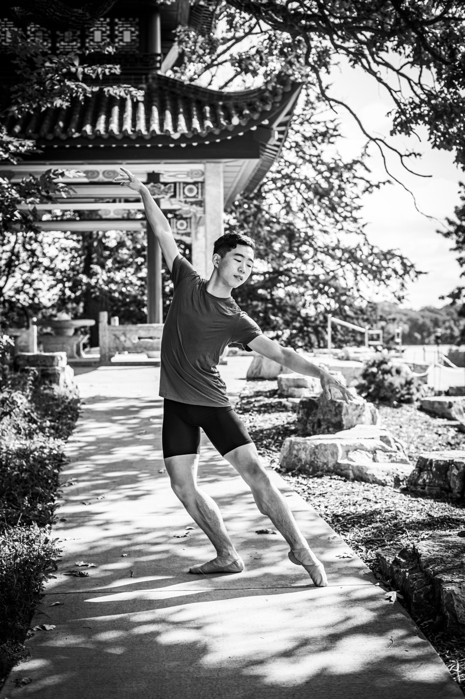
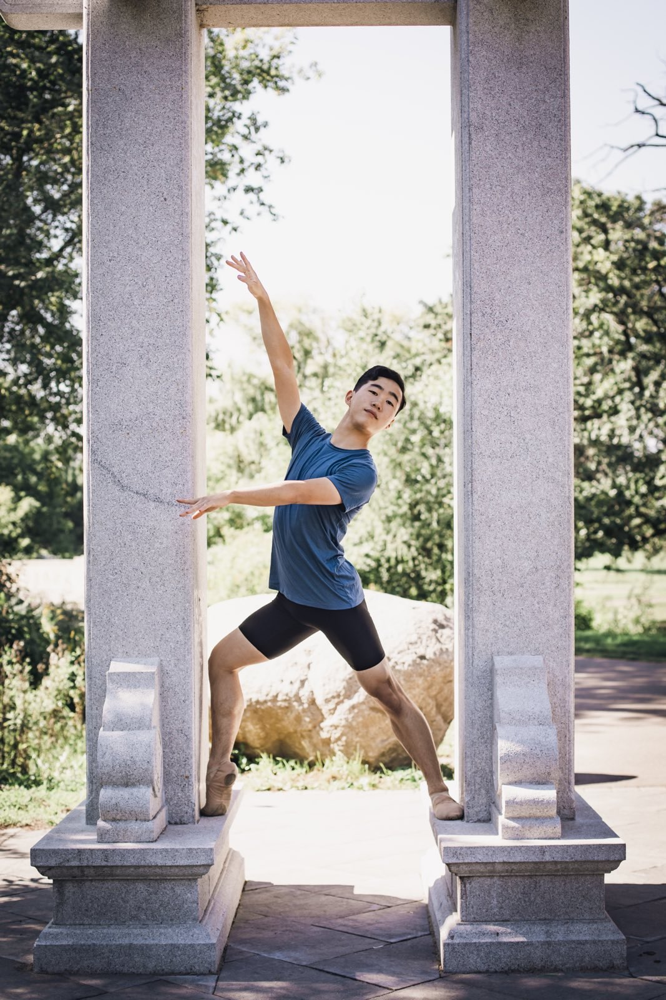
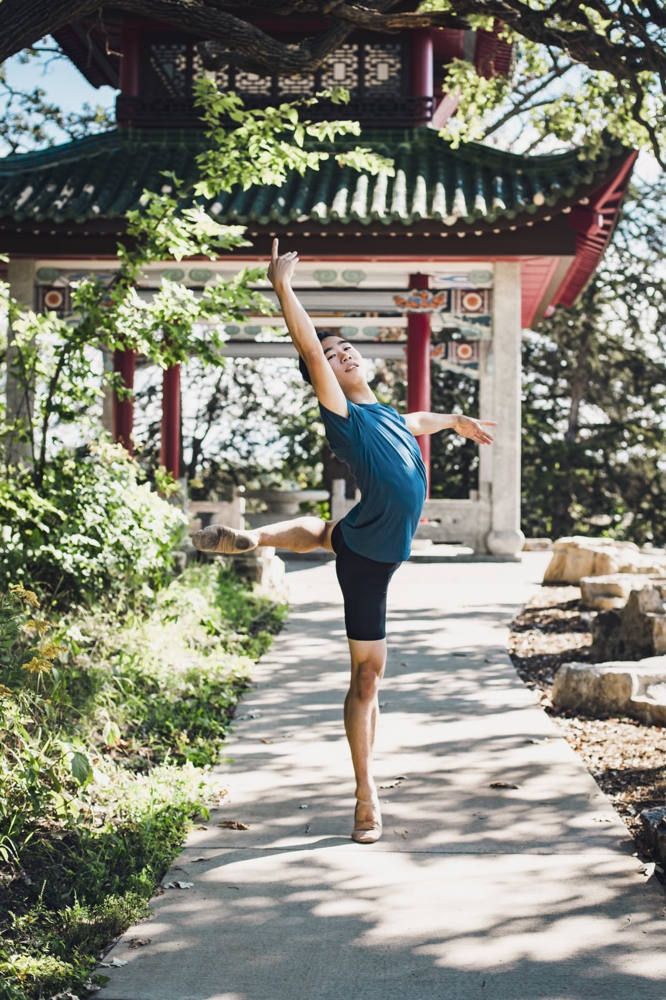
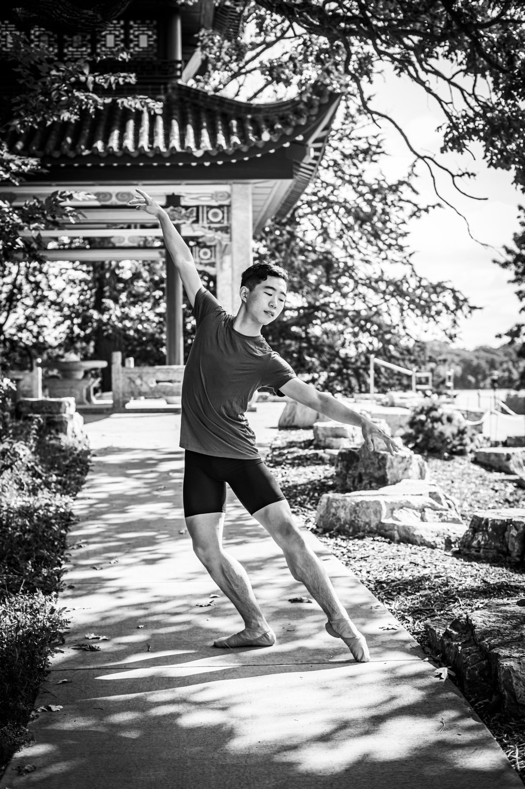
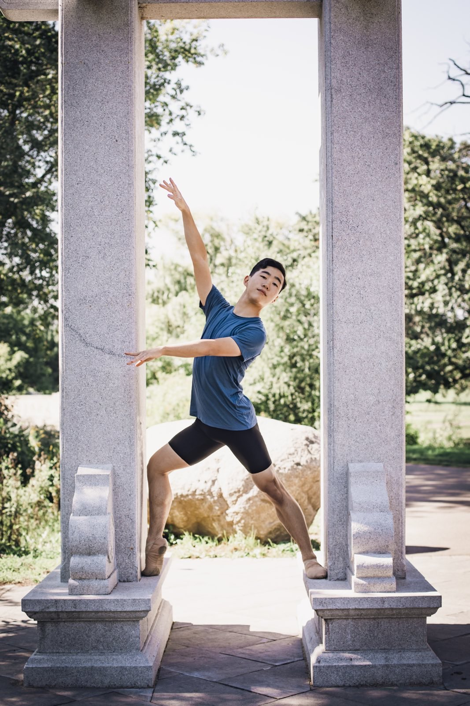
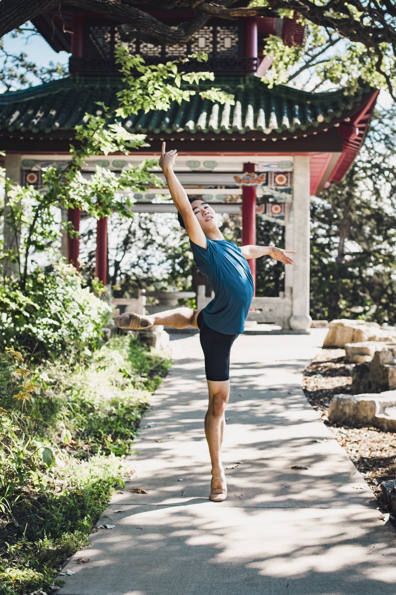
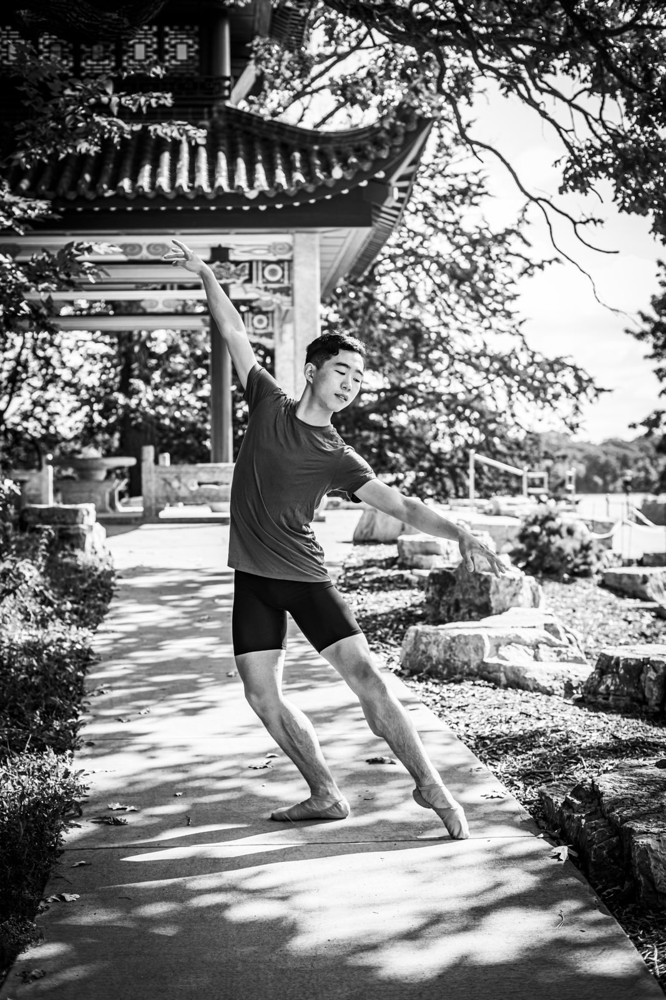
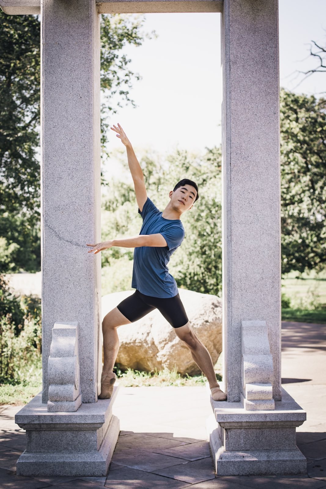

Image Gallery
 





My name is Kaito Aihara, and I am a Ballet Dancer currently studying at the Jacobs School of Music: Indiana Univeristy Bloomington
Dance resumeKaito began his dance training at the age of eight at St. Paul City Ballet in Minnesota. During his early dance education, he also studied at St. Paul Ballet and Ballet Co. Laboratory. During high school, Kaito attended the dance program at Interlochen Arts Academy in Michigan before moving to New York City to study at the Ellison Ballet Professional Training Program. He has also attended many summer intensives, including the Royal Ballet School in London summer intensive, Ellison Ballet summer intensive, John Cranko summer intensive in New York City, Cincinnati Ballet Summer Intensive, and the Boca Ballet summer intensive in Florida. Kaito is currently pursuing a Bachelor of Science degree in Ballet from the Indiana University Jacobs School of Music with an outside field of study in Computer Science. At IU, he has had the opportunity to perform in works such as Tarantella by George Balanchine, Shibuya Blues by Annabelle Lopez Ochoa, Heatscape by Justin Peck, Sandpaper Ballet by Mark Morris, and Sasha Jane’s production of the Nutcracker.



#TODO fill this section with dancing videos